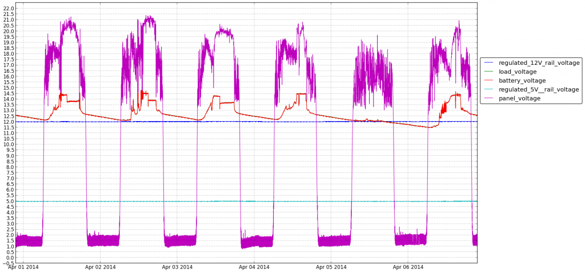

Poor man's secrets storage
I'm a bit cautious when it comes to storing my passwords and other secrets. I do not use any web or desktop applications to do this for me. How do I remember those passphrases then ? I have a central file server, accessible via a tunnel. I store there a gpg-encrypted file containing a tar archive of a directory with various files containing secrets. Syncing these files across computers became a bit cumbersome lately. I'm using git to version them, but because I do not want to have the sync server to contain unencrypted secrets I needed to bake some custom solution. Bash to the rescue ! There are still some assumptions made here about permissions, directories layout and some stuff not failing, but I'm sure you'll be able to figure this out and tweak to your needs.
#!/bin/bash TUNNEL_CREDS="user@tunnelhost" TUNNEL_PORT=123 STORAGE_CREDS="storage_user@localhost" STORAGE_ADDRESS="storagehost.example.org" SOCKET="/tmp/black_socket" REMOTE_VAULT_PATH="/somepath/.vault.tar.gpg" TMP_VAULT="/tmp/.vault.tar.gpg" TMP_VAULT_TAR="/tmp/.vault.tar" TMP_VAULT_DIR="/tmp/.vault" TMP_LOCAL_PORT=10022 LOCAL_VAULT_DIR="$HOME/.vault" LOCAL_VAULT_BACKUP_DIR="$LOCAL_VAULT_DIR.bak" pushd `pwd` echo "removing old vault backup at $LOCAL_VAULT_BACKUP_DIR" rm -rI "$LOCAL_VAULT_BACKUP_DIR" set -e echo "backing up local vault..." cp -r "$LOCAL_VAULT_DIR" "$LOCAL_VAULT_BACKUP_DIR" echo "establishing tunnel ..." ssh -L $TMP_LOCAL_PORT:$STORAGE_ADDRESS:22 $TUNNEL_CREDS -p $TUNNEL_PORT -N -f -M -S "$SOCKET" echo "tunnel ready, copying remote version of the vault..." rsync --progress -avz -e "ssh -p $TMP_LOCAL_PORT" "$STORAGE_CREDS:$REMOTE_VAULT_PATH" "$TMP_VAULT" echo "decrypting new vault..." gpg -d "$TMP_VAULT" > "$TMP_VAULT_TAR" echo "unpacking new vault..." mkdir -p "$TMP_VAULT_DIR" tar xf "$TMP_VAULT_TAR" -C "$TMP_VAULT_DIR" echo "pulling from remote vault..." cd "$LOCAL_VAULT_DIR" git pull "$TMP_VAULT_DIR" echo "pulling to remote vault..." cd "$TMP_VAULT_DIR" git pull "$LOCAL_VAULT_DIR" echo "cleaning up a bit..." rm -fr "$TMP_VAULT_TAR" rm -fr "$TMP_VAULT" echo "packing refreshed remote vault..." tar pcf "$TMP_VAULT_TAR" -C "$TMP_VAULT_DIR" . echo "encrypting refreshed remote vault..." gpg -c "$TMP_VAULT_TAR" echo "sending out updated vault" rsync --progress -avz "$TMP_VAULT" -e "ssh -p $TMP_LOCAL_PORT" "$STORAGE_CREDS:$REMOTE_VAULT_PATH" echo "cleaning up.. " rm -fr "$TMP_VAULT_DIR" rm -fr "$TMP_VAULT_TAR" rm -fr "$TMP_VAULT" echo "closing tunnel.." ssh -S "$SOCKET" -O exit $TUNNEL_CREDS popd
Compiling git 2.0 on cygwin
I had some troubles compiling git 2.0 under cygwin. I present you with a very dirty hack to do so. Proper patch will probably follow. Did I mention that the hack is dirty and will make your hands burn if you're gonna type it in ?
git clone https://github.com/git/git.git cd git git checkout v2.0.1 autoconf ./configure # so far so good... make # oops # .... SUBDIR perl make[2]: /home/cplotnicki/dev/git/perl/0: Command not found perl.mak:375: recipe for target 'blib/lib/.exists' failed make[2]: *** [blib/lib/.exists] Error 127 Makefile:16: recipe for target 'all' failed make[1]: *** [all] Error 2 Makefile:1653: recipe for target 'all' failed make: *** [all] Error 2
Want perl as '0' ? Well, why not. Here you are:
# link perl as 0 to some directory that is in your path ln -s /usr/bin/perl ~/tools/0 # also link here, obviously. # 'perl' is a direct subdir for your git checkout ln -s /usr/bin/perl perl/0 make # should now compile # cygwin's permission scheme is very peculiar # here, have a dirty hack for your default install # where there is no su or sudo chmod a+rwX -R /usr/local/share/man/man3 chmod a+rwX -R /usr/local/lib/perl5/site_perl make install git --version # should display 2.0.1. # update man pages' cache manually /etc/postinstall/man-db.sh
PoC or GTFO 0x04
No need to re-introduce PoC or GTFO here. Just download it already !
Mount your filament spool on the wall
I find it useful to hang as much stuff as possible on the walls, instead of using shelf/floor/desk space for that. Here is just a quick hack I did to allow filament spools to be mounted securely to a wall. It turns out that if you cut off the bent part the rod it fits perfectly into the spool's handle hole.

Better crypto initiative
It's not common for me to put just one link here as the resource for the article. Today, however, is one of these days. The bettercrypto gals and guys came up with really excellent practical guide to securing your servers. Here it is: https://bettercrypto.org/static/applied-crypto-hardening.pdf A draft for now, but already sporting a high concentration of knowledge. BTW - it being a draft means that you should read it and contribute to it as well.
Adding voltage and current measurements to the sunpowered Pi
Remember my sunpowered Pi installation on the balcony ? The only indication I had, since recently, on how well the system is doing was an LED blinking red when battery was low. Not really helpful in making predictions or making measurements over the time. I've searched for simple ADC solution to hook up into Pi and allow for some voltage and power measurements. I've decided on ADC Pi, as it seemed very straightforward in its design and also comes with example python code. Did I say Python ?! I must admit that it is not at the top of my favourite languages list. But then I had fun. It turned out that Python has excellentgraph plotting library as well as it is very well equipped with general purpose functions and hardware specific stuff support, like i2c. But back to the system design. The panel itself can generate up to about 30V under no load. Battery is 12V nominal but can get to 14.5V when charging, the specs say. ADC Pi however, can measure up to 5V. You have some resistors laying around you say ? Voltage divider it is. For current measurement I've used hall effect sensor module from Pololu. Summarising, I have 8 measurement lines, hooked up as follows:
- unused :D
- voltage of the power line from Pi to current sensor
- panel voltage
- battery voltage
- load voltage
- regulated 12V rail voltage
- regulated 5V rail voltage
- current sensor reading voltage
It turned out that for the current measurement to be accurate I can't trust the voltage coming from the Pi to be stable. I actually measure that and use that to calculate the real reading. The docs round the hall sensor are not that obvious at the first sight, so here's the formula I came up with, for the greater good:
current = (measured_sensor_voltage - (voltage_powering_sensor/2))/0.185
Finally, sprinkle all of the above with some python and get the following: 
Looking at this you can spot 2 things. One - April the 5th was supercloudy superrainy and the battery did not get much charge. And the second being that on the average day the battery gets to the full capacity near the half of the sunny period. This is the data I was after ! I think this means that I can add more batteries to the system and on a sunny day they will get filled up and this should suffice for couple of rainy days in a row. Here, get some photos as the bonus, also:
TODOs, for me, and everyone else, to remember that nothing is ever finished in the realm of hobby stuff:
- add graph for power usage
- would be super cool to add the weather data to the graphs
- clean up python stuff, add more unit tests there
- write next post on the above ;)
Changing Terminal preferences in Gnome 3
It turns out this was not that obvious, at least for me, how to change various profile preferences for Gnome Terminal under Gnome 3. You can go and fetch the list of profiles this way:
~# dconf list /org/gnome/terminal/legacy/profiles:/ :b1dcc9dd-5262-4d8d-a863-c897e6d979b9/
And then you can use the profile id to list and change various settings:
~# dconf list /org/gnome/terminal/legacy/profiles:/:b1dcc9dd-5262-4d8d-a863-c897e6d979b9/ foreground-color login-shell palette use-system-font use-theme-colors font bold-color-same-as-fg bold-color background-color audible-bell ~# dconf write /org/gnome/terminal/legacy/profiles:/:b1dcc9dd-5262-4d8d-a863-c897e6d979b9/font "'Inconsolata for Powerline Medium 18'" ~# dconf write /org/gnome/terminal/legacy/profiles:/:b1dcc9dd-5262-4d8d-a863-c897e6d979b9/login-shell true
PoC or GTFO
Hey – to all you curious folks – the new issue of PoC or GTFO is well, out ! The best minds in infosec on exploits and more. Lots of hardcore programming knowledge to obtain. For your convenience, as it’s not that easy to get this on the webs, I’ve took a liberty of uploading them here.
WiFi on RaspberryPi
Easiest way I've found to configure wifi on RaspberryPi, not really being mentioned when you search for such. Not using separate wpa_supplicant configuration at all.
root@frontend:~# cat /etc/network/interfaces auto lo iface lo inet loopback iface eth0 inet dhcp allow-hotplug wlan0 iface wlan0 inet dhcp wpa-ssid NETWORK_NAME wpa-psk NETWORK_KEY iface default inet dhcp
Sunpowered server setup
Remember my NAS stuff ? It turned out great ! Very reliable storage, I had a disk failure once and haven't noticed for some time because all the files were just there. Hardware enhanced virtualization is another great stuff. I ended up migrating all my of infrastructure there, each service in separate virtual machine; email, calendar, contacts, tor node and such. Only caveat ? Power consumption. This setup just eats Watts. About 50W constant power usage is not something you want to have turned on 24h/day. One such day I had a realization that this giant ball of plasma that is hanging out there might be of some use. One side of my balcony is to the south somewhat, gets lots of sunshine no matter whether it's morning or evening. Why not exploit that ? That's how my first solarpowered server setup was born. Enjoy the photos ! Also please find upgrade options and general notes after the break ! There's a part 2of this post you might be interested in as well.
Setup itself consists of:
- 144W solar panel
- 33Ah 12V battery
- trusty old WRT54GL
- Raspberry Pi model B
- charging controller
- 12V and 5V step up/step down converters. Don't use linear converters, especially for the 5V rail. As these will give you the 5V by dissipating the difference from 12V directly onto their heatsinks, huge power loses.
- around one hundred M3 hexhead screws with nuts and washers. yup.
The router acts as wireless bridge to my home WiFi network, there are no cables running from inside the house to the balcony. Router and raspi use about 8W total. It is winter in here now and this seems to be holding nicely, panel being able to charge the battery for the night during relatively short day, even if the weather is bad. However, I want more computing power there and this setup does not seem to be very scalable. Another raspi model B means another 4W constant power usage. I estimate the whole thing will start loosing power during the night with about 15W constant consumption. Which is okay for stuff like email server, but not really for blog or other sites. Hence my first idea for improvement: discard router and change for the separate raspis, model A, with wireless network cards each. Should be much better. Some general notes:
- Use equipment specifically designed for DC. You want to disconnect the solar panel or battery sometimes. To be able to to that without that fancy sparks show you need proper DC switch able to handle high currents. AC switches as any other equipment dragged from AC land are not really a choice. If you use AC mains switch to switch high current DC you might end up with nice weld in place of your switch. Same for fuses.
- My ability to cut acrylic to line is nonexistent. Probably maybe use better tools ? Or even, since I now know how the box should be cut - just order pieces for box 2.0 cut to size already.
- Same for my ability to make stuff look nice and clean
- I like the look of bare PCBs inside of transparent box though
- The box itself seems to be holding up nicely against below zero temperatures as well as rain.
- Air flow is nice, nothing is heating up. Air enters from the bottom, heats up a bit and moves up. Goes through the holes on the left, into the funnel and exist on the right. Water does not enter as there is pretty steep slope there.
- Watch for SD card corruption. Most often, the cause is having 5V not really being 5V. Raspi does not really like lower voltages. One preventive measure would be not to use some cheap voltage converters. Another is to mount SD card with very conservative options. I use
/dev/mmcblk0p2 / ext4 defaults,rw,data=journal,journal_checksum,discard 0 1
- Make sure your electronic components are rated for -40C to +80C
- I'm a bit worried of battery being in such proximity to the airco unit. We'll see in the summer whether it needs relocation, for now the unit is completely powered off.
- mountain climbing equipment comes in handy when hanging stuff from your balcony
Future improvements:
- most pressing: get the power usage down by changing to model A + wifi card
- add monitoring, something like ADC connected to raspi's GPIO ports, gathering voltages all across. I would like to get readings on: solar panel voltage, battery voltage, 5V rail actual voltage and the whole system power usage at least
- more safety fuses and bypass diodes


{kind=link}
{kind=link}
{kind=link}
{kind=link}
{kind=link}
{kind=link}
{kind=link}
{kind=link}
{kind=link}
{kind=link}
{kind=link}
{kind=link}
{kind=link}
{kind=link}
{kind=link}
{kind=link}
{kind=link}
{kind=link}
{kind=link}
{kind=link}
{kind=link}
{kind=link}
{kind=link}
{kind=link}
{kind=link}
{kind=link}
{kind=link}
{kind=link}
{kind=link}
{kind=link}
{kind=link}
{kind=link}
{kind=link}